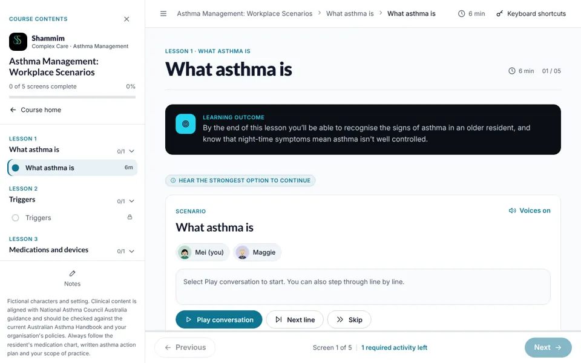

L1-S01Scene change

Nurses’ station, handover, 6:45 am
- On screen
- On-screen: Nurses’ station, handover, 6:45 am
- Interaction
- Header scene bar updates. Background: morning (soft green). Cut line appears in the thread.
- Audio
- No voice. 1.2 s pause.